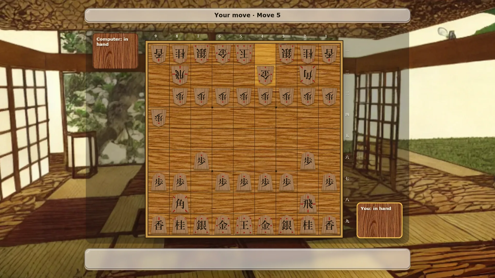
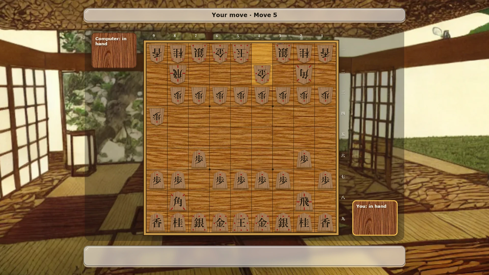
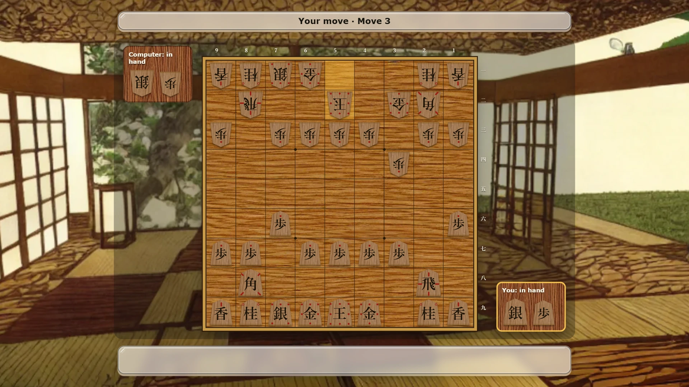

Shogiwise — play shogi online free
Shogi is Japanese chess. Two players move pieces across a board of nine by nine squares, and the game ends when one king is trapped. The difference from chess comes with the first capture: a piece you take changes sides, waits in your hand, and can later be dropped back onto the board as your own. Shogiwise plays it in the browser, against the computer or a friend.


The board and the pieces
Each player starts with a king, a rook, a bishop, two golds, two silvers, two knights, two lances and nine pawns. The pieces are flat wooden wedges with a kanji written on them, and they all look the same colour. You tell yours apart by their direction: your pieces face away from you, and your opponent's face you.
If you do not read the kanji yet, turn on the move guide. It marks each piece with small dots for the squares it can step to and lines for the directions it can slide, so you can play your first game without learning a single character.
How the pieces move
| Piece | How it moves | Promoted |
|---|---|---|
| King 王 / 玉 | one square in any direction | does not promote |
| Rook 飛 | any distance along a rank or file | Dragon 龍: also one square diagonally |
| Bishop 角 | any distance diagonally | Horse 馬: also one square straight |
| Gold 金 | one square straight or diagonally forward | does not promote |
| Silver 銀 | one square diagonally or straight forward | moves like a gold |
| Knight 桂 | two forward and one to the side, jumping | moves like a gold |
| Lance 香 | any distance straight forward | moves like a gold |
| Pawn 歩 | one square straight forward | moves like a gold (と) |
Pawns capture the way they move, straight ahead. Knights, lances and pawns can never move backwards until they promote.
Drops: the move that makes shogi different
When you capture a piece it goes to the stand beside the board, your komadai. On any later turn, instead of moving a piece, you can drop one from your stand onto any empty square. It arrives unpromoted and fights for you from then on. Pieces almost never leave the game, so the fight gets busier as it goes on.
Three limits apply. You may not have two unpromoted pawns of your own in the same file. You may not drop a pawn that gives checkmate at once. And you may not drop a piece where it could never move again, such as a pawn or a lance on the last rank, or a knight on the last two.
Promotion
The three ranks furthest from you are the promotion zone. When a piece moves into, out of or within that zone, you may turn it over to its promoted side. Shogiwise asks you each time with a small choice under the board. A pawn, lance or knight that would have no move left must promote. Kings and golds never promote, and a dropped piece always lands unpromoted.
How a game ends
You win by checkmate, when your opponent's king is attacked and has no way out. Either side can also resign. If the same position, with the same pieces in hand and the same side to move, appears for the fourth time, the game is a draw. The exception is perpetual check: if every move one player made through that repetition was a check, that player loses. Shogiwise also calls a draw at 256 moves.
Two ways to play
Against the computer you choose one of three levels. Easy looks one move ahead and picks from the stronger half of its moves, so it leaves pieces hanging. Medium looks two moves ahead and chooses among its best three. Hard searches three moves deep and plays the best move it finds. You can also choose to move first (sente) or second (gote).
Friend online opens a room for two. Send the link or read out the six-letter code, and your friend joins in their browser. Others can follow a game from a watch link. Nobody needs an account.
Tips
Keep your king in a castle of golds and silvers before you attack. Trade pieces when you are ahead, because every capture strengthens your hand. Look at your opponent's stand before each move: a piece in hand can land on any empty square, so a gap next to your king is an open door. That is why a piece in hand is often worth more than the same piece on the board. The Japan Shogi Association, founded in 1924, still keeps the rules this game follows.
More board and card games
For the Western cousin of shogi, try Rookwise (chess). For another game from Japan, try Hanawise, with koi-koi and the hanafuda flower cards. For a quick two-player board game, try Gomowise (Gomoku, five in a row).
More like this: 2-player games online · Multiplayer browser games · Board games with friends